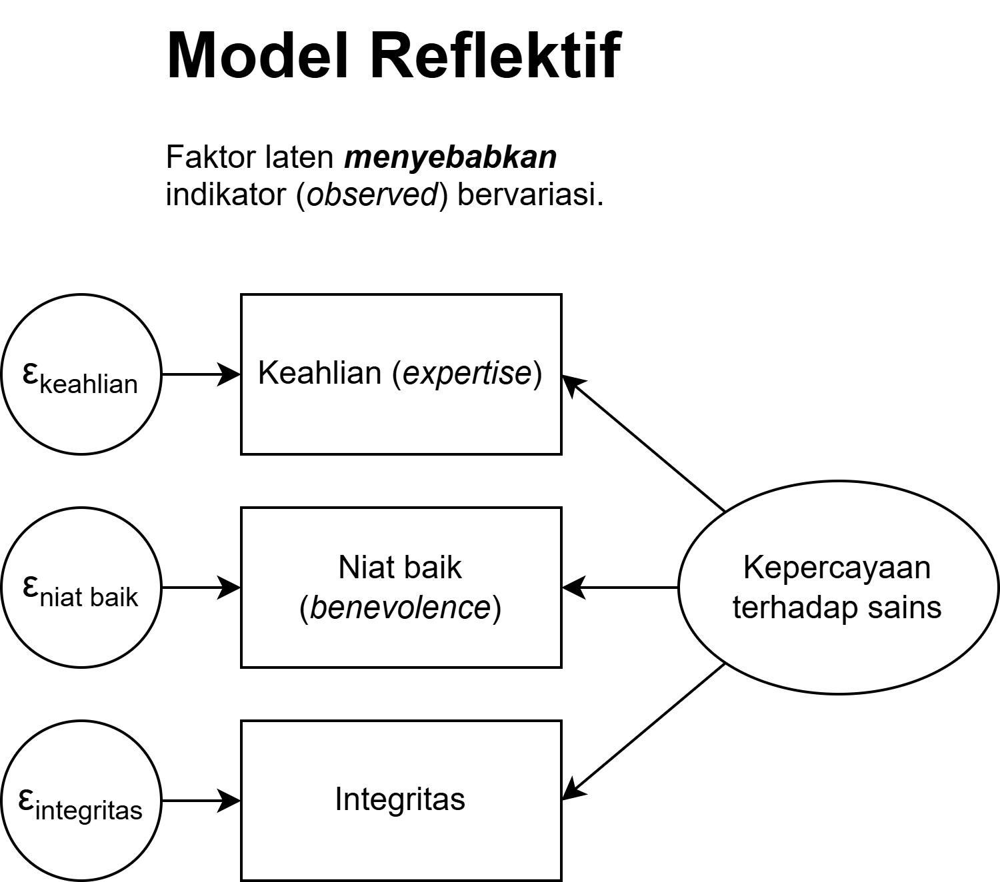
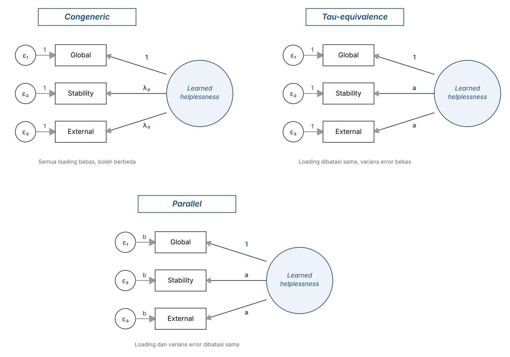
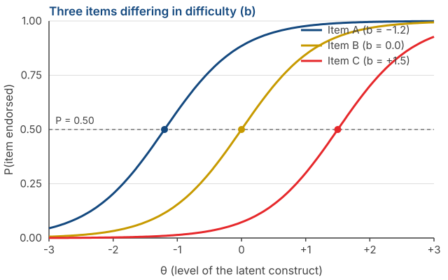
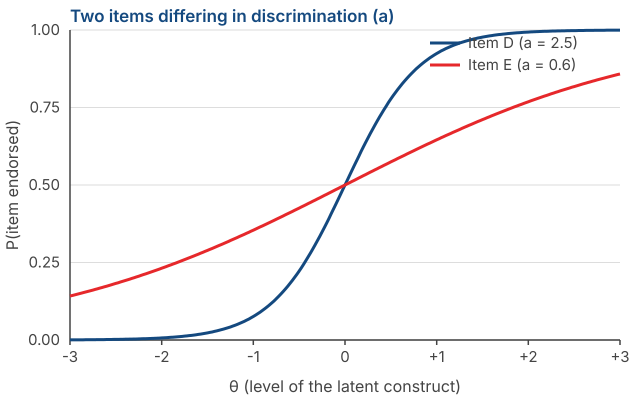

Latent Variables: Classical Test Theory and a Glimpse of Item Response Theory
Psychological Scale Construction
2026-08-28
Outline
- What a latent variable is, and why we call it a cause
- Classical Test Theory: \(X = T + E\) and its assumptions
- Why reliability can be defined as a proportion of variance
- What true score actually means — and why it is not “the real amount of the construct”
- Consequences of CTT: number of items, attenuation, and sample dependence
- The family of CTT models: parallel, tau-equivalent, congeneric
- A glimpse of Item Response Theory and what it offers
From assumptions to a model
Where we are
Session 1: psychological measurement is indirect, and not every set of items is a scale.
Session 2: there are six assumptions we rely on, most of them without noticing.
Today: those assumptions get tidied into a formal mathematical model.
Why we need a model
As long as assumptions are only a list, nothing can be computed from them. Once they are written as equations, we can derive their consequences — including the reliability formulas you will use in Session 13.
What is a latent variable
Two words, two properties
Latent, not manifest. Not directly observable. Parents’ aspirations for their child’s achievement cannot be seen, only inferred.
Variable, not constant. Something about it changes — its strength, its magnitude — across people, times, and situations.
A latent variable is usually a characteristic of the person supplying the data (e.g., the parent), not of the object being asked about (e.g., the child’s achievement).
Notice who is actually being measured
If we ask parents to report their aspirations for their child, we are measuring a characteristic of the parents, not the child.
If we ask parents to report their child’s own aspirations, the latent variable is better described as parents’ perceptions of their child’s aspirations.
If we ask shoppers to rate a brand, we are measuring shoppers’ perceptions, not the brand’s actual properties.
A naming error that happens often
The name of your construct must reflect whose data you collected (e.g., the estimand).
The latent variable as a cause
The core idea: the strength of the latent variable causes an item to take a particular value.
Take the item “No sacrifice is too great if it helps my child succeed.” How strongly someone agrees is determined by how strong their aspiration is.
Note the direction of the arrow: from construct to item (e.g., “Reflective Model”). Not the other way round.
Everything else follows from this
If one common cause drives ten items, those ten items must correlate with one another.
Inter-item correlations can be computed. The latent variable cannot. So those correlations are the only way in to estimating something we cannot observe.

This is what makes item analysis possible
We can never compute the correlation between an item and the true score, because the true score is unobserved.
But we can compute the correlations between items.
From the pattern of inter-item correlations, we can infer how strongly each item is tied to the latent variable.
Worth remembering
The procedures you will run in Session 13 — corrected item-total correlations, dropping weak items — rest entirely on this logic.
Classical Test Theory
The equation
\[X = T + E\]
\(X\) — the observed score. What you actually get from a respondent.
\(T\) — the true score. What that person would score if measurement were perfect.
\(E\) — error. Everything that makes \(X\) deviate from \(T\).
What goes into \(E\)
The respondent’s physical state, a passing mood, an ambiguous item, noise in the room, a mis-click. CTT does not separate these sources. They are all collected into a single error term.
The three CTT assumptions
The mean of the errors is zero: \(E(e) = 0\). Over infinitely many repeated measurements, errors cancel out.
Error is uncorrelated with true score: \(\text{Cov}(T, E) = 0\). Highly anxious people do not systematically have larger errors.
Errors across measurements are uncorrelated: \(\text{Cov}(E_1, E_2) = 0\).
Notice what is being assumed
All three say that error is random, not systematic. A consistent bias — for example every respondent answering more positively because of social desirability — does not enter \(E\).
From scores to variance
If \(X = T + E\) and \(\text{Cov}(T, E) = 0\), the variance separates too:
\[\sigma^2_X = \sigma^2_T + \sigma^2_E\]
In words: the variability we observe in scores consists of variability from genuine differences between people, plus variability from noise.
The reliability question then becomes very simple: what proportion of that variability is not noise?
Reliability as a proportion of variance
\[\rho_{XX'} = \frac{\sigma^2_T}{\sigma^2_X} = \frac{\sigma^2_T}{\sigma^2_T + \sigma^2_E}\]
It ranges from 0 to 1, because it is a proportion.
\(\rho = 0.80\) means 80% of the variability in scores comes from genuine differences between people, and 20% from error.
Note that this is a statement about how consistent the scores are, not about how correct they are.
A worked example
Suppose your scale has a total-score standard deviation of \(\sigma_X = 5\), so \(\sigma^2_X = 25\), with reliability \(\rho = 0.80\).
\[\sigma^2_T = 0.80 \times 25 = 20 \qquad \sigma^2_E = 25 - 20 = 5\]
The standard error of measurement, the standard deviation of the errors:
\[SEM = \sigma_X\sqrt{1-\rho} = 5\sqrt{0.20} = 2.24\]
Why this number is useful
Someone who scores 30 is really located within a range, not at a point. At 95% confidence:
\[30 \pm 1.96 \times 2.24 \;\approx\; 25.6 \text{ to } 34.4\]
What that range means
Two people scoring 30 and 33 cannot be said to differ. Their ranges overlap almost entirely.
And a scale with \(\rho = 0.80\) already counts as good by the usual rules of thumb.
The lower the reliability, the wider the range, and the less we can say about any individual.
Remember this when you build norms
In Session 14 you will convert scores into categories. If your category boundaries are narrower than your scale’s \(SEM\), those categories are not meaningful — the same person could land in different categories simply by responding on a different day.
What is a true score, really?
The definition
In CTT, the true score is defined as the expected value of the observed score if the same person were measured repeatedly and independently with the same instrument.
Note: the definition attaches to the instrument, not to the construct.
A true score is “the stable score this instrument produces”, not “the real amount of the construct that person has”.
The miscalibrated scale analogy
Imagine a bathroom scale that always reads 2 kg heavier than the truth.
Weigh someone a hundred times. The results are highly consistent — random error is small, so reliability is high.
That person’s true score, by the CTT definition, is their real weight + 2 kg.
The important conclusion
CTT has no way to detect a consistent bias. Systematic bias goes into \(T\), not into \(E\).
Which means: a reliable instrument can measure the wrong thing, very consistently.
Reliability is not validity
Reliability is a property of scores: how consistent they are when measurement is repeated.
Validity is also a property of scores — more precisely, of the interpretation of scores for a proposed use.
The first does not guarantee the second. Your scale can have \(\alpha = 0.92\) and its scores still reflect a construct other than the one you claim.
But they are connected
Reliability sets an upper bound on the validity coefficient, the correlation between your scores and a criterion:
\[r_{XY} \leq \sqrt{\rho_{XX'} \times \rho_{YY'}}\]
This involves the criterion’s reliability too. If the criterion is assumed to be measured without error (\(\rho_{YY'}=1\)), the formula simplifies to \(r_{XY} \leq \sqrt{\rho_{XX'}}\): with \(\rho_{XX'} = 0.64\), the largest correlation you could possibly obtain is \(0.80\) — however strong the real relationship is. If the criterion is itself fallible, the upper bound drops further.
Validity is not a property of a scale
Validity refers to the degree to which evidence and theory support the interpretations of test scores for proposed uses of tests.
— AERA, APA, & NCME (2014), Standards for Educational and Psychological Testing
The sentence “our scale is valid” is incomplete. What evidence can or cannot support is an interpretation of scores, for a stated purpose, in a stated population.
Messick (1989) describes validity as an integrated judgement of how far evidence and theory support the inferences and actions taken on the basis of scores.
Why this distinction matters
Validity evidence does not transfer automatically. A scale whose score interpretation is supported for research on students is not thereby supported for job selection or clinical diagnosis.
As soon as the population, the purpose, or the use changes, the evidence has to be re-examined.
So validity is never finished. It is not stamped once and valid forever.
How to write this in your report
Avoid “our scale is valid”. Write instead:
“There is evidence supporting the interpretation of scores on scale X as an indicator of construct Y, in population Z, for purpose W.”
We cover the types of evidence in Session 7.
Connect this back to Session 1
Recall Michell’s objection: are psychological attributes genuinely quantitative?
The equation \(X = T + E\) presumes the answer is yes. We add and subtract \(T\) and \(E\) as though both were magnitudes.
CTT does not prove that assumption. CTT builds on it.
Consequences of CTT
Why adding items raises reliability
Error is random. Some items push a score too high, others too low.
When items are summed, errors in opposite directions cancel out — while true score accumulates.
The more items, the smaller \(\sigma^2_E\) is as a proportion of \(\sigma^2_X\).
Remember Bernoulli’s arrows from Session 1
Exactly the same principle: one shot tells you little, but the average of many shots converges on the real centre.
The formula (Spearman-Brown) comes in Session 6.
There is a limit
Adding items only helps if the new items actually measure the same construct.
Adding near-duplicate items will raise \(\alpha\) without adding any information — this is the local independence violation from Session 2.
And an over-long questionnaire creates new problems: fatigue and careless responding.
For your project
A high \(\alpha\) is not evidence that your scale is good. It can be achieved by writing ten paraphrases of the same sentence.
Now attenuation makes sense
In Session 1 we used this formula without explaining it:
\[r_{XY} = \rho_{T_X T_Y} \times \sqrt{\rho_{XX'} \times \rho_{YY'}}\]
Its origin is now clear: what we correlate is \(X\), and \(X\) contains \(E\).
The \(E\) part correlates with nothing — by CTT’s second assumption.
So error adds to the denominator without adding to the numerator, and the correlation shrinks.
The takeaway
The larger the share of noise in your scores, the smaller every correlation you report.
The most serious weakness of CTT
Reliability in CTT depends on the sample.
If your respondents are very uniform on the attribute, their range of true scores is narrow. Inter-item correlations shrink, and the computed reliability drops — even though the instrument is unchanged.
Conversely, a highly heterogeneous sample makes the same instrument look more reliable.
A practical consequence for your pilot study
The reliability you report is not purely a property of your instrument — it is partly a property of your sample. So always report sample characteristics alongside the coefficient.
And not only reliability
Item difficulty in CTT is the proportion of respondents endorsing an item. That number changes when the sample changes.
Item discrimination is the item’s correlation with the total score. That shifts with the sample too.
So nearly every item statistic in CTT is relative to whichever group you happened to measure.
The family of CTT models
Three measurement models

What separates them
Congeneric — each item may relate to the construct with a different strength, and may have a different error variance. The loosest and most realistic.
Tau-equivalent — all items are assumed to relate to the construct equally strongly, but error variances may differ.
Parallel — equal relationships to the construct and equal error variances. The strictest, and rarely satisfied.
Note
Note that all three are assumptions about your items, not about the people. This follows directly from the unit-weighting assumption in Session 2.
Why this will matter in Session 6
Cronbach’s alpha assumes the tau-equivalent model — that every item contributes equally.
If your items are really congeneric (and they almost always are), \(\alpha\) will underestimate the true reliability.
The omega coefficient (\(\omega\)) does not require that assumption, and is generally more appropriate.
What to take from this slide
You do not need to compute anything yet. What you should carry forward is: \(\alpha\) has an assumption, and that assumption is rarely met. We check the consequences in Session 6.
A glimpse of Item Response Theory
The problem it sets out to solve
In physical measurement, 20 kilograms means the same thing whatever is being weighed. The instrument’s properties do not depend on the object (e.g., specific objectivity).
IRT wants the same for questionnaire items: item properties that are independent of who completes them.
CTT has a built-in linkage between the instrument and the people measured. IRT, at least in theory, does not.
First difference: the focus is on items
CTT
Emphasises properties of the scale as a whole.
Reliability is raised mainly by adding items.
IRT
Emphasises properties of each item.
Reliability is raised by selecting better items.
Note
This difference has a large practical consequence: CTT tends to produce long, redundant scales; IRT tends to produce short, selected ones.
Second difference: items have a “difficulty”
The item “I sometimes feel sad” measures a lower level of depression than “I feel that life is not worth living.”
The first distinguishes people who are rarely sad from those who are sad more often. It is useless for distinguishing the severely depressed from the very severely depressed.
The second only distinguishes people at the top of the continuum.
The core idea
Every item is sensitive to a particular region of the construct’s range. IRT makes that explicit and computable.
Item characteristic curves

Horizontal axis: a person’s level on the latent construct (\(\theta\)). Vertical axis: the probability of endorsing the item.
The difficulty parameter (\(b\)) is the point where that probability is exactly 0.50 — marked by the dots.
Reading that figure
Item A (\(b = -1.2\)) is easy to endorse. Even people below average on the construct tend to agree with it.
Item C (\(b = +1.5\)) is hard to endorse. Only people at the top tend to agree.
A good scale contains items spread across the range, rather than bunched at one point.
A weakness that often goes unnoticed
If all your items are “easy”, your scale cannot distinguish people at the top. They will all score near the maximum. This is a ceiling effect, and a high \(\alpha\) will not reveal it.
The second parameter: discrimination

Item D is steep: a small change in \(\theta\) changes the probability of endorsement sharply. This item separates people cleanly.
Item E is shallow: its probability changes slowly. This item barely distinguishes anyone.
Note
The closest CTT equivalent of discrimination is the item–total correlation, which you will compute in Session 13.
The IRT family of models
Rasch / 1PL — models difficulty (\(b\)) only.
2PL — models difficulty and discrimination (\(a\)).
3PL — adds a guessing parameter (\(c\)), useful for multiple-choice tests.
For Likert items with ordered categories, polytomous models such as the Graded Response Model are used.
What IRT demands in return
Unidimensionality — the same as CTT. Items must share one latent variable.
Local independence — formally required, not merely recommended.
Large, heterogeneous samples. IRT’s theoretical advantage is only realised when items are calibrated on such samples.
Notice
The first two are precisely assumption 4 from Session 2. IRT does not remove assumptions — it demands them more strictly.
Why this course still uses CTT
Sample size. A realistic pilot study for your group this semester will not support stable IRT calibration.
Software. We use jamovi, where the CTT workflow is far simpler to learn in one semester.
The results are still good. For constructing a Likert scale for research purposes, classical methods are adequate.
What to take from this section
Not the ability to run an IRT analysis, but the awareness that CTT item statistics are relative to your sample — and that another framework exists which tackles that problem head-on.
Group exercise
Rank the items by “difficulty”
Here are six items for the construct social anxiety:
- I get a little nervous when I have to introduce myself in a new class.
- I avoid events where I would have to talk to people I do not know.
- I cancel important plans because I am afraid of meeting many people.
- I feel uncomfortable when other people are paying attention to me.
- I cannot study or work because I am afraid of being judged.
- I prefer to sit at the back so that I will not be asked anything.
Rank them from easiest to endorse to hardest to endorse. Time: 10 minutes.
Then discuss
What did your group base the ranking on? You have no data at all — so where did that judgement come from?
Which part of the social anxiety range is not covered by these six items?
Now look at your own group’s construct. Do the items you already have in mind bunch in one part of the range, or spread across it?
If every one of your items is “easy to endorse”, what will happen to your score distribution and to your scale’s ability to tell respondents apart?
Tip
We will use question 3 directly when building the blueprint in Session 10.
Summary
6️⃣ Key points
The latent variable is a cause, and that is why items in one scale must correlate.
\(X = T + E\), assuming error is random — not systematic.
Reliability is a proportion of variance: the share of score variability that is not noise.
True score attaches to the instrument, not to the construct. A consistently biased instrument can still be highly reliable — and reliability and validity are both properties of scores, not of a scale.
CTT item statistics depend on the sample. Report sample characteristics alongside every coefficient.
\(\alpha\) assumes the tau-equivalent model, which is rarely satisfied.
For Session 4
We descend to the most practical level: response formats.
- Likert — how many points, and should there be a midpoint?
- Semantic Differential — when adjective pairs work better than statements.
- Guttman — when items really are ordered by logic.
- And the question that ties it back to today: which assumptions does a choice of response format change?
Preparation
Read the response-format sections of DeVellis & Thorpe (2022), Chapter 5. If you want the formal version of today’s material, Chapter 3 of the same book covers reliability in full.
Any questions❓

Notes
- These slides were built with and Quarto, using the UNAIR Theme template.
- Reach me at amelia.zein@psikologi.unair.ac.id
References
AERA, APA, & NCME. (2014). Standards for educational and psychological testing. American Educational Research Association.
Crocker, L., & Algina, J. (2008). Introduction to classical and modern test theory. Cengage.
DeVellis, R. F., & Thorpe, C. T. (2022). Scale development: Theory and applications (5th ed.). SAGE.
Embretson, S. E., & Reise, S. P. (2010). Item response theory for psychologists. Psychology Press.
Hambleton, R. K., Swaminathan, H., & Rogers, H. J. (1991). Fundamentals of item response theory. SAGE.
Lord, F. M., & Novick, M. R. (2008). Statistical theories of mental test scores. Information Age Publishing. (Original work published 1968)
McDonald, R. P. (1999). Test theory: A unified treatment. Lawrence Erlbaum.
Messick, S. (1989). Validity. In R. L. Linn (Ed.), Educational measurement (3rd ed., pp. 13–103). Macmillan.
Rasch, G. (1960). Probabilistic models for some intelligence and attainment tests. Danmarks Paedagogiske Institut.
Raykov, T., & Marcoulides, G. A. (2011). Introduction to psychometric theory. Taylor & Francis.
Samejima, F. (1969). Estimation of latent ability using a response pattern of graded scores. Psychometrika Monograph Supplement, 34(4, Pt. 2).